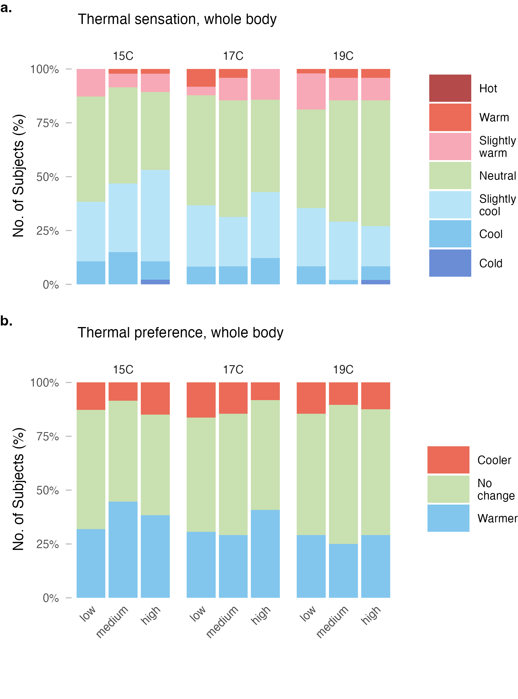
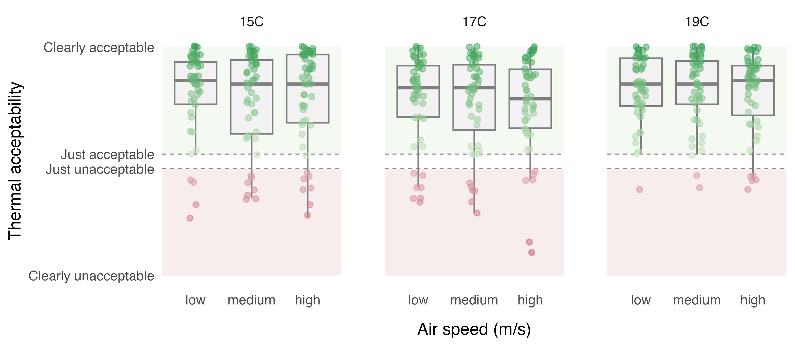
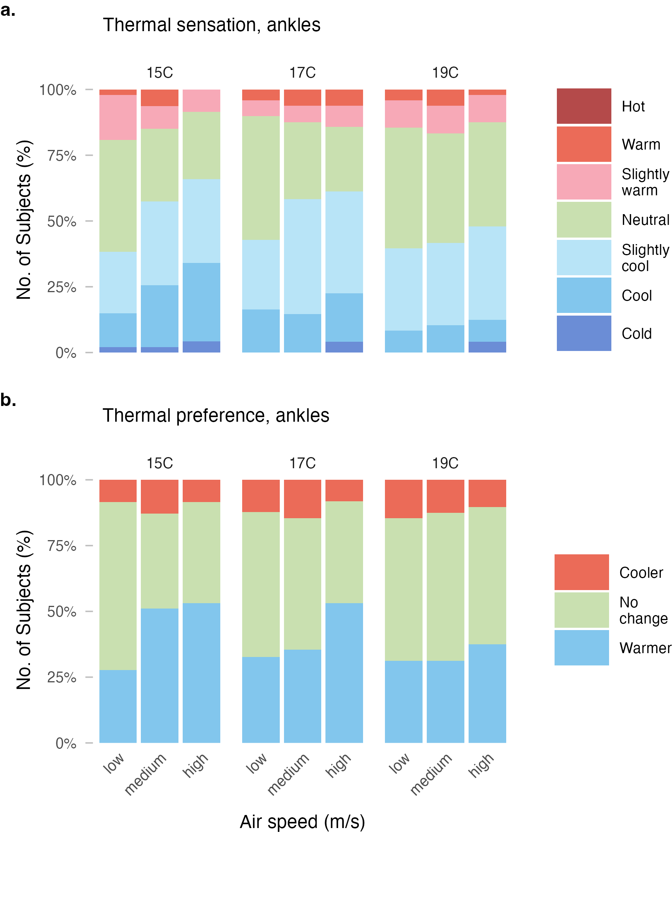
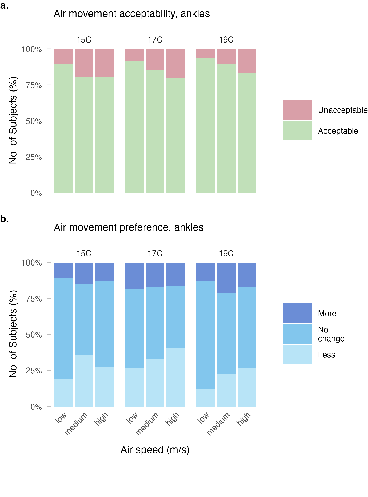
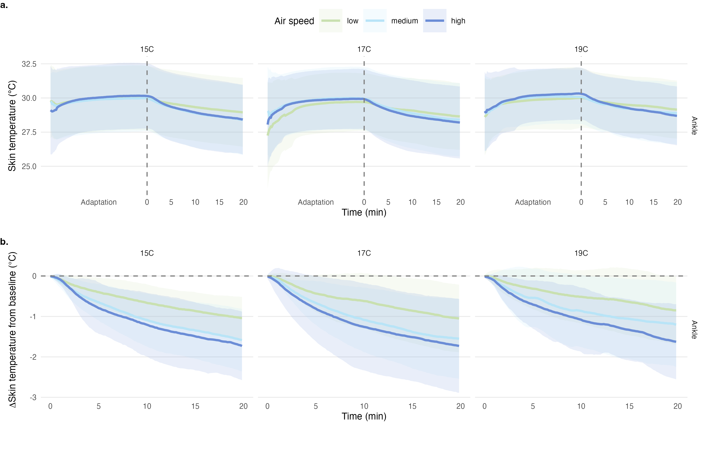
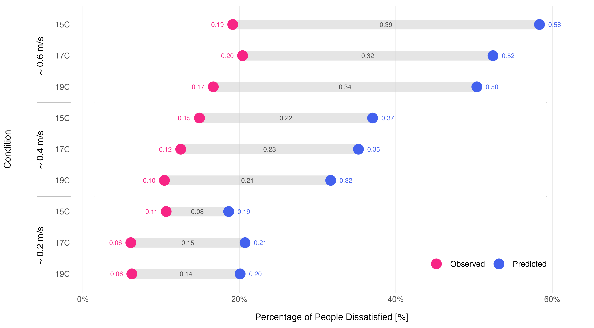
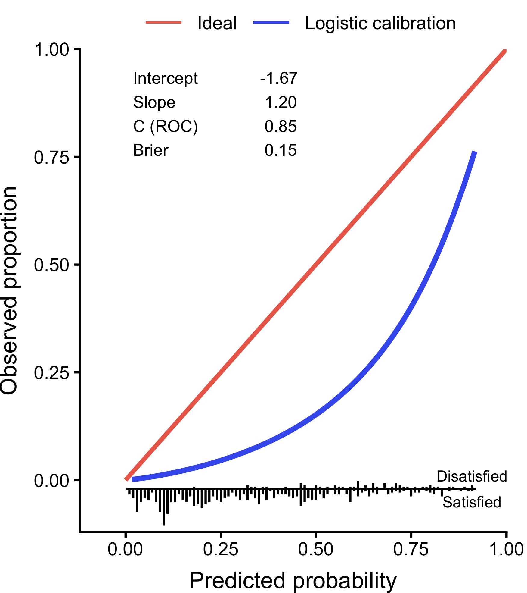
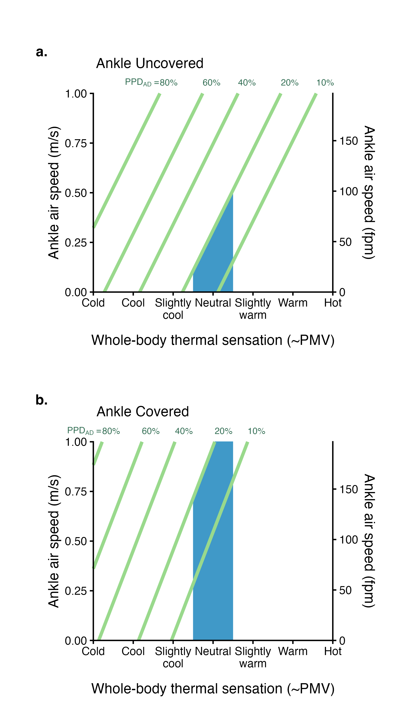

![]()
| Construct | Question | Scale type | Levels |
|---|---|---|---|
| Thermal sensation | How do you feel right now? | 7-point continuous | −3 (cold) −2 (cool) −1 (slightly cool) 0 (neutral) +1 (slightly warm) +2 (warm) +3 (hot) |
| Thermal comfort | Right now do you find this environment…? | 6-point continuous | −3 (very uncomfortable) −2 (uncomfortable) −1 (just uncomfortable) +1 (just comfortable) +2 (comfortable) +3 (very comfortable) |
| Thermal preference | Right now would you prefer to be…? | 3-point ordinal | −1 (warmer) | 0 (no change) | +1 (cooler) |
| Thermal acceptability | Please rate your acceptance of the current thermal environment | 4-point continuous | −2 (clearly unacceptable) −1 (just unacceptable) +1 (just acceptable) +2 (clearly acceptable) |
| Thermal satisfaction | How satisfied are you with the thermal environment right now? | 7-point continuous | −3 (very dissatisfied) −2 (dissatisfied) −1 (slightly dissatisfied) 0 (neither nor) +1 (slightly satisfied) +2 (satisfied) +3 (very satisfied) |
| Thermal pleasantness | Right now do you find this thermal environment…? | 7-point continuous | −3 (very unpleasant) −2 (unpleasant) −1 (slightly unpleasant) 0 (neutral) +1 (slightly pleasant) +2 (pleasant) +3 (very pleasant) |
| Air movement acceptability at ankles | Please rate your acceptance of air movement at your ankles | 4-point continuous | −2 (clearly unacceptable) −1 (just unacceptable) +1 (just acceptable) +2 (clearly acceptable) |
| Air movement preference at ankles | Right now around my ankles I would prefer…? | 3-point ordinal | −1 (less air movement) | 0 (no change) | +1 (more air movement) |
| Air quality preference | Please rate your acceptance of the current air quality in the room | 4-point continuous | −2 (clearly unacceptable) −1 (just unacceptable) +1 (just acceptable) +2 (clearly acceptable) |
| Clothing change | Did you adjust your upper body clothing? | binary | — |
Thermal comfort responses to ankle-level draft under winter clothing conditions
1 Center for the Built Environment, University of California, Berkeley, USA
2 Department of Architecture, College of Environmental Design, University of California, Berkeley, USA
3 Department of Civil and Environmental Engineering, College of Engineering, University of California, Berkeley, USA
4 Department of Architecture, School of Design, Shanghai Jiao Tong University, Shanghai, China
✉ Correspondence: Tobias Kramer <t.kramer@berkeley.edu>
Abstract
1 Introduction
Cold downdraft near windows is a common source of local thermal discomfort in buildings during winter. When outdoor temperatures drop, the interior surface of windows, particularly large or poorly insulated glazing, becomes significantly cooler than the surrounding air. This temperature differential causes nearby air to cool, increase in density, and descend, creating a localized airflow pattern that can cause discomfort at the lower extremities of seated occupants (Heiselberg, 1994 ). Building designers typically address this issue by installing perimeter heating systems, such as radiators or in-floor heating, to counteract the downdraft effect and to prevent thermal discomfort in the ankle region.
The current approach to evaluating ankle draft risk relies on a predictive model presented in Liu et al. (2017), which estimates the predicted percentage dissatisfied (PPD) with ankle draft as a function of air speed and temperature at ankle level, as well as whole-body thermal sensation. This model, now incorporated into ASHRAE Standard 55 (ASHRAE, 2023), was derived from laboratory experiments conducted under cooling conditions typical of underfloor air distribution (UFAD) and displacement ventilation systems. Importantly, participants in these foundational studies, including an earlier investigation by Schiavon et al. (2016), wore summer clothing with exposed ankles, resulting in clothing insulation levels of approximately 0.5 clo.
However, building occupants in winter typically wear substantially different attire. Analysis of the ASHRAE Global Thermal Comfort Database II (Földváry Ličina et al., 2018) indicates that median clothing insulation in office environments during heating seasons is approximately 0.75 clo, with occupants commonly wearing long trousers, closed-toe shoes and socks that cover the ankle region. This discrepancy raises an important question: does the existing ankle draft model, calibrated for summer conditions with exposed skin, accurately predict discomfort when ankles are covered by clothing?
If the current model overestimates draft risk under winter clothing conditions, the practical implications are significant. Designers may be specifying perimeter heating systems that are larger than necessary, or installing them in situations where they could be avoided entirely. This has consequences for both first costs and operational energy consumption, as perimeter heating systems contribute to building energy use and associated carbon emissions. Conversely, if the model underestimates risk, occupants may experience discomfort that compromises satisfaction and productivity.
The objective of this study is to evaluate thermal comfort responses to ankle-level draft under typical winter clothing conditions through controlled laboratory experiments. Specifically, we aim to: (1) characterize whole-body and local thermal perception across a range of supply air temperatures and air speeds representative of window downdraft conditions; (2) compare observed dissatisfaction rates with predictions from the existing ankle draft model; and (3) assess whether the current ASHRAE 55 criteria require adjustment for winter scenarios. The findings are intended to inform guidance on perimeter heating requirements and support more energy-efficient building design without compromising occupant comfort.
2 Methods
2.1 Experimental design
We conducted a controlled laboratory experiment using a within-subjects repeated-measures design. Each participant was exposed to nine experimental conditions in a 3×3 factorial arrangement, varying supply air temperature (SAT) at three levels (15°C, 17°C, 19°C) and air speed at ankle level at three levels (low, medium, high; ranging between 0.1–0.7 m/s). The SAT and air speeds were selected to represent the range of conditions associated with window downdraft under typical winter conditions, informed by computational fluid dynamics simulations conducted as part of a broader research collaboration.
PLACEHOLDER EXPERIMENTAL PROTOCOL GRAPHIC
Participants attended four sessions: an introductory session for explaining the experiment and obtaining consent, followed by three experimental sessions of approximately two hours each. Each experimental session corresponded to one SAT level, with participants experiencing all three air speed conditions within that session in a counterbalanced order. We scheduled sessions on separate days to minimize carryover effects and subjects were allowed to attend the three sessions in their preferred order.
2.2 Climate chamber and apparatus
We conducted the experiment in a climate-controlled chamber at the Center for the Built Environment, UC Berkeley. The chamber floor area is approximately 25 m². We set up three workstations to allow simultaneous testing of multiple participants and three seats for reacclimatization during breaks in the back of the room. Ambient room conditions were maintained at approximately 22°C operative temperature, 50% relative humidity, and background air velocity below 0.1 m/s, targeting a whole-body thermal sensation of approximately −0.5 (slightly cool) on the ASHRAE seven-point scale as calculated using the CBE Comfort Tool (Tartarini et al., 2020).
PLACEHOLDER CHAMBER SETUP GRAPHIC
We used custom displacement diffusers to deliver conditioned air to the ankle region of participants seated at the three workstations. The diffuser was positioned 0.7 m behind each workstation, directing airflow toward the participants’ lower legs from behind and simulating the approach direction of window downdraft. The diffuser was connected to an independent air handling unit capable of delivering supply air at the target temperatures and flow rates. The three supply air temperatures (15°C, 17°C, 19°C) represent temperatures at the VAV outlet and we controlled air flow rates by damper adjustment. Turbulence intensity at the measurement location was approximately 30% (see Table 3), consistent with values reported in prior ankle draft studies (Liu et al., 2017). The three seats in the back of the room were not affected by the diffusers targeting the three workstations only.
2.3 Monitoring
2.3.1 Environmental
We measured head-level air temperature (1.1 m) at each workstation using calibrated Atmocube monitors (Atmotech Inc., United States; air temperature: -40 to +125°C, ± 0.5°C, relative humidity: 0 to 100%RH, ± 2 %RH, CO2: 0 to 5000 ppm, ± 50 ppm + 2.5% of reading at standard room levels) positioned within 0.5 m of participants. To measure air velocity and air temperature at ankle level (0.1 m) we used the AirDistSys 5000 omnidirectional hot-wire anemometers (Sensor Electronic, Poland, air velocity: 0.05-5 m/s, accuracy: ±0.02 m/s ±2% of reading; temperature: -10 to +50°C, accuracy: ±0.2°C, sampling interval: 1 s). Room-level measurements of relative humidity and CO2 concentration were recorded throughout each session.
2.3.2 Physiological
In addition, we recorded continuously participants skin temperature on the lateral lower leg (mid-calf) and feet using iButton sensors (Thermochron, Maxim Integrated, USA, Type DS1923; measurement range: 20°C to 85°C; accuracy: ±0.5°C; resolution: 0.0625°C) attached with medical-grade hypoallergenic tape. We used the skin temperature data to assess local cooling responses and as physiological correlates of subjective thermal sensation.
2.3.3 Subjective feedback
To assess the perception of the thermal environment we used validated scales consistent with prior ankle draft research and ASHRAE Standard 55 requirements. Constructs and their scales used in the questionnaires are summarized in Table 1 below. We administered the questions electronically via a custom survey tool written in Java. Participants were not required to respond to any individual question, though completion rates were monitored.
2.4 Participants
We recruited 51 participants from the university community and local area through the Experimental Social Science Laboratory (Xlab) platform and email outreach to individuals who had participated in previous studies and consented to future contact. Eligible participants were between 21 and 55 years of age, fluent in English, and free from chronic cardiorespiratory conditions or recent major surgery. Pregnant individuals were excluded. Demographic details of the cohort are summarized in Table 2.
2.5 Experimental protocol
Upon arrival for each experimental session, we checked participants for elevated temperature and fitted them with skin temperature sensors. Participants then entered the climate chamber and completed a 20-minute adaptation period in the acclimatization zone under baseline conditions.
To simulate typical winter office attire, we instructed participants to wear a long-sleeve top, long trousers (ending just above the ankle), thin socks, and closed-toe shoes. This ensemble targets a clothing insulation of approximately 0.75 clo, consistent with the median value observed in office buildings during heating seasons (Földváry Ličina et al., 2018). Participants were permitted to make minor clothing adjustments during sessions (e.g., rolling sleeves), and any changes were recorded.
Following adaptation, participants were exposed to three consecutive 20-minute conditions at different air speed levels, with 20-minute rest periods between conditions (see PROTOCOL GRAPHIC REFERENCE). The sequence of air speed conditions was counterbalanced across participants and sessions. During each exposure period, participants completed standardized questionnaires at the end of each interval.
2.6 Statistical analysis
2.6.1 Variable processing
Thermal sensation votes were collected on a continuous scale. For descriptive analyses, we mapped these values to the corresponding categorical sensation levels, whereas the original continuous values were retained for statistical modeling. We dichotomized ankle airflow acceptability as acceptable or unacceptable for subsequent analyses. The original recorded votes for thermal acceptability, thermal preference, ankle thermal preference, and ankle airflow preference were retained without further processing. Consistent with the definition used by Liu et al. (2017), we defined ankle draft dissatisfaction as an ankle thermal sensation vote below 0 (neutral) together with an ankle airflow acceptability vote below 0.
2.6.2 Within-subject comparisons
We used a within-subject repeated-measures design and conducted comparisons between experimental conditions within participants. We analyzed continuous variables using paired-samples t-tests and reported paired Cohen’s d as the effect size. We analyzed ordinal variables using the paired Wilcoxon signed-rank test, reporting the test statistic based on the normal approximation and the effect size r. For multiple pairwise comparisons within each family of tests, we adjusted p-values using the Benjamini-Hochberg method [@benjaminiHighberg1995].
2.6.3 Evaluation of the existing ankle draft model
Applying it to the experimental data, we calculated the predicted percentage of dissatisfaction with ankle draft at each observation point. Predictions were then averaged by experimental condition and compared with the observed dissatisfaction percentages. We used calibration curves to quantitatively assess the model’s predictive performance in this study’s dataset [@vancalster2016] and report the calibration intercept and slope, AUC, and Brier score. All analyses were implemented using the R package CalibrationCurves [@deCockCalibrationCurves2023].
2.6.4 Development of the new ankle draft model
We modeled ankle draft dissatisfaction using a generalized linear mixed model with a binomial distribution and logit link, as the outcome was binary and repeated observations were correlated within subjects. We included the subject as a random intercept to account for between-subject heterogeneity and within-subject dependence arising from repeated measurements. To enable an integrated analysis of the effects of different clothing conditions on ankle draft dissatisfaction, we also included data from Liu et al. (2017) in the modeling dataset. Continuous predictors were mean-centered using the overall means of the combined dataset before model fitting.
In this generalized linear mixed model, the inverse-logit transformation is nonlinear. As a result, direct back-transformation of the fixed-effects linear predictor yields a conditional probability, representing an individual-level prediction when the random effect is set to zero, rather than a population-averaged probability. To characterize the average risk of dissatisfaction at the population level, we therefore use marginal probabilities instead of conditional probabilities (Neuhaus et al., 1991). Specifically, we extracted fixed-effect estimates and the variance of the random intercept from the fitted model, assuming that the random intercept followed a normal distribution with mean zero. We then approximated integration over the random effects using Monte Carlo simulation (K = 10,000, random seed = 1), and calculated the marginal predicted probability for each combination of predictor values.
Because these marginal probabilities generally cannot be written as a simple closed-form equation, we used the Monte Carlo-simulated marginal probabilities to fit an approximate linear equation for logit(P). Applying the inverse-logit transformation to the fitted equation yielded a closed-form prediction equation. We evaluated the accuracy of this approximation using coefficient of determination (R2).
2.7 Software
We performed all data processing, statistical analyses, and model fitting in R (version 4.4.1). The main packages we used were tidyverse (version 2.0.0), lme4 (version 2.0.1), rstatix (version 0.7.3), and CalibrationCurves (version 3.0.0).
3 Results
3.1 Participants and environmental conditions
| Sex | No. Subjects | Age [a] | Height [m] | Weight [kg] | Body Mass Index (BMI) |
|---|---|---|---|---|---|
| All | 51 | 23.5 (+/- 5.9) | 1.70 (+/- 0.10) | 69.0 (+/- 11.8) | 23.9 (+/- 4.1) |
| Female | 28 | 23.5 (+/- 6.4) | 1.65 (+/- 0.06) | 65.6 (+/- 11.5) | 24.3 (+/- 4.7) |
| Male | 20 | 23.9 (+/- 5.6) | 1.79 (+/- 0.09) | 74.8 (+/- 9.6) | 23.4 (+/- 3.0) |
| Third Gender / Other | 3 | 22.0 (+/- 1.0) | 1.61 (+/- 0.02) | 62.0 (+/- 14.9) | 23.9 (+/- 5.7) |
Table 2 summarizes the demographic information of the study subjects. A total of 51 subjects participated in the study (28 female, 20 male, 3 other), with a mean age of 23.5 (+/- 5.9) years.
| Measurement | 15C | 17C | 19C |
|---|---|---|---|
| Air temperature, head level (°C) | 21.9 ( +/- 0.2) | 21.9 ( +/- 0.3) | 21.9 ( +/- 0.2) |
| Relative humidity (%) | 54.9 ( +/- 5.5) | 52.3 ( +/- 5) | 51.2 ( +/- 4.8) |
| Air temperature, ankle level (°C) | 17.6 ( +/- 0.2) | 18.3 ( +/- 0.2) | 19.7 ( +/- 0.2) |
| Air speed, low (m/s) | 0.14 ( +/- 0.02) | 0.16 ( +/- 0.01) | 0.18 ( +/- 0.01) |
| Air speed, medium (m/s) | 0.37 ( +/- 0.02) | 0.39 ( +/- 0.03) | 0.42 ( +/- 0.03) |
| Air speed, high (m/s) | 0.64 ( +/- 0.04) | 0.62 ( +/- 0.01) | 0.65 ( +/- 0.03) |
| Turbulence, low (%) | 0.36 ( +/- 0.02) | 0.34 ( +/- 0.01) | 0.3 ( +/- 0.01) |
| Turbulence, medium (%) | 0.26 ( +/- 0.02) | 0.23 ( +/- 0.01) | 0.23 ( +/- 0.02) |
| Turbulence, high (%) | 0.24 ( +/- 0.01) | 0.24 ( +/- 0.01) | 0.23 ( +/- 0.01) |
Table 3 provides an overview of the measured environmental conditions. Across all three sessions, head-level air temperature remained stable at 21.9 ( +/- 0.2) °C, 21.9 ( +/- 0.3) °C, and 21.9 ( +/- 0.2) °C, and relative humidity was comparable across sessions, confirming stable background thermal conditions.
As the primary experimental manipulation, we set supply air temperatures to 15°C, 17°C, and 19°C to simulate the effect of window downdraft. Ankle-level temperatures were slightly higher than the supply temperature due to mixing with the warmer ambient air, but remained stable across all sessions. Within each session, we exposed subjects to three airspeed levels at separate workstations. We measured consistent air speeds across all three workstations and sessions, confirming reliable reproduction of the low, medium, and high airspeed conditions. Turbulence intensities remained low throughout, indicating stable and controlled airflow.
3.2 Whole body thermal perception
Figure 1 presents whole-body thermal sensation and preference responses across all experimental conditions. Thermal sensation votes were predominantly in the neutral to slightly cool range, with 81%–92% of participants reporting sensations between “Cool” and “Neutral” across conditions. At the lowest supply air temperature (15°C), 43% of participants reported feeling slightly cool at the highest air speed, compared to 28% at the lowest air speed. This pattern was less pronounced at warmer supply temperatures.
Thermal preference responses indicated that participants were generally satisfied with the thermal conditions. Across all conditions, 47%–65% of participants preferred “No change” to the thermal environment. The proportion preferring warmer conditions ranged from 25% to 45%, with the highest values observed during the 15°C supply air temperature sessions.

Figure 2 shows thermal acceptability responses for whole-body conditions. Overall, acceptability was high across all conditions, ranging from 85% to 98%. Acceptability rates were highest during the 19°C supply air temperature sessions (90%–98%) and lowest at 15°C (85%–91%). Within each supply air temperature condition, air speed had minimal effect on whole-body thermal acceptability.

3.3 Ankle level observations
3.3.1 Thermal perception
Figure 3 presents thermal sensation and preference responses at the ankle level. Compared to whole-body responses, participants reported cooler sensations at the ankles. The proportion reporting sensations on the cool side of neutral (cold, cool, or slightly cool) ranged from 38% to 66% across conditions. At the coldest supply air temperature (15°C) with high air speed, 66% of participants reported cool sensations at the ankles, compared to 39% at 19°C with low air speed.
Thermal preference at the ankle level reflected this cooling effect. The proportion of participants preferring warmer ankles ranged from 28% to 53%. At the most demanding condition (15°C, high air speed), 53% preferred warmer ankles, while at the mildest condition (19°C, low air speed), this proportion decreased to 31%.

3.3.2 Air movement perception
Figure 4 shows air movement acceptability and preference at the ankle level. Despite the localized cooling, air movement at the ankles was rated acceptable by 80%–94% of participants across all conditions. Acceptability was highest at 19°C (83%–94%) and lowest at 17°C (80%–92%). Within each supply air temperature, acceptability tended to decrease slightly with increasing air speed.
Air movement preference responses indicated that a substantial proportion of participants would prefer less air movement at the ankles, particularly at higher air speeds. The proportion preferring less air movement ranged from 12% to 41%. At 17°C with high air speed, 41% preferred less air movement, compared to only 12% at 19°C with low air speed. The majority of participants (43%–75%) preferred no change to the air movement across conditions.

3.3.3 Skin temperature
Using each participant’s skin temperature during the pre-exposure adaptation period as the baseline, ankle skin temperature during the final 1 min of exposure was negative under all conditions, ranging from approximately -1.7 to -0.8°C. In general, the magnitude of skin temperature reduction increased with air speed, with medium and high air speeds typically producing greater cooling than low air speed across all three supply air temperature conditions. After BH correction, the differences between low and medium air speed and between low and high air speed were significant at all three supply air temperatures (p_adj < 0.05 and p_adj < 0.001, respectively), whereas the difference between medium and high air speed was significant only at 19C (p_adj = 0.012). These findings suggest that increasing local airflow enhanced the short-term cooling response of the ankle skin.

3.4 Dissatisfaction with ankle draft
Figure 6 compares the dissatisfaction rate predicted by the Liu model with the observations during our experiment. Across all tested conditions, the existing model consistently overpredicted local thermal dissatisfaction compared to the observed rates. At an ankle temperature of 15°C, the discrepancy between predicted and observed rates increased significantly with air speed: at low flow (0.2 m/s), the difference was 8 percentage points (pp), rising to 39 pp at high flow (0.6 m/s).
Similar trends were observed at 17°C and 19°C. Notably, for the 19°C condition at high air speed (0.6 m/s), the predicted PPD was 50%, while the actual dissatisfied rate was only 17%, resulting in a mean overestimation of 34 pp. On average across all experimental sessions, the model overpredicted dissatisfaction by 23.1 pp.

Under winter conditions, the observed ankle draft dissatisfaction was substantially lower than that predicted by the model of Liu et al. (2017). Although the model retained acceptable discrimination on this dataset (AUC = 0.847), the calibration results indicated a systematic overestimation under winter conditions, as shown in Figure 7. Across the nine experimental conditions, the mean observed dissatisfaction rate was 13%, whereas the Liu model predicted an average of 36%, corresponding to an overestimation of approximately 2.8 times. The discrepancy was greatest at high air speed and smaller, but still evident, at low air speed.

3.5 Updated model for winter conditions
As shown in Table 4, in the mixed-effects model including all candidate predictors, air speed at ankle, whole-body thermal sensation, and ankle condition were significantly associated with draft dissatisfaction at the ankle, whereas room air temperature, air temperature at ankle, and turbulence intensity were not significant within the range investigated in this study.
| Predictor | Estimate | SE | z | p |
|---|---|---|---|---|
| Air speed at ankle | 3.20 | 0.57 | 5.57 | <0.001 |
| Room air temperature | -0.12 | 0.25 | -0.51 | 0.612 |
| Air temperature at ankle | -0.08 | 0.07 | -1.14 | 0.254 |
| Whole-body thermal sensation | -1.44 | 0.13 | -11.32 | <0.001 |
| Turbulence intensity | 0.39 | 1.36 | 0.29 | 0.776 |
| Ankle condition (uncovered vs. covered) | 1.22 | 0.44 | 2.79 | 0.005 |
| Season | -1.59 | 0.85 | -1.86 | 0.063 |
As shown in Table 4, in the mixed-effects model including all candidate predictors, air speed at ankle, whole-body thermal sensation, and ankle condition were significantly associated with draft dissatisfaction at the ankle, whereas room air temperature, air temperature at ankle, and turbulence intensity were not significant within the range investigated in this study. Based on these results, separate mixed-effects models for ankle draft dissatisfaction were developed for the ankle-uncovered and ankle-covered conditions, using air speed at ankle and whole-body thermal sensation as predictors.
| Condition | Predictor | Estimate | SE | z | p |
|---|---|---|---|---|---|
| Ankle uncovered | Intercept | -1.64 | 0.32 | -5.16 | <0.001 |
| Air speed at ankle | 3.51 | 0.61 | 5.75 | <0.001 | |
| Whole-body thermal sensation | -1.46 | 0.16 | -9.35 | <0.001 | |
| Ankle covered | Intercept | -3.55 | 0.45 | -7.97 | <0.001 |
| Air speed at ankle | 2.74 | 0.91 | 3.01 | 0.003 | |
| Whole-body thermal sensation | -1.46 | 0.22 | -6.62 | <0.001 |
As shown in Table 5, the two final models exhibited the same structure but different coefficients. The intercept of the covered model was 1.91 units lower than that of the uncovered model, indicating a substantially lower baseline risk of ankle draft dissatisfaction when the ankle was covered by clothing. In addition, the air speed coefficient was smaller in the covered model than in the uncovered model, indicating reduced sensitivity of dissatisfaction to air velocity under ankle-covered conditions.
For the ankle-uncovered condition, the approximate closed-form equation derived from the marginal predictions of the mixed-effects model can be written as:
\[ PPD_{AD} = \frac{\exp\left(-2.087 + 2.255V - 0.915TS\right)}{1 + \exp\left(-2.087 + 2.255V - 0.915TS\right)} \]
For the ankle-covered condition, the corresponding approximate closed-form equation is:
\[ PPD_{AD} = \frac{\exp\left(-3.222 + 1.878V - 0.983TS\right)}{1 + \exp\left(-3.222 + 1.878V - 0.983TS\right)} \]
Where, \(PPD_{AD}\) is the predicted percentage dissatisfied with ankle draft, \(V\) is air speed at ankle (m/s), and \(TS\) is whole-body thermal sensation.
These linear approximations reproduced the marginal predictions of the mixed-effects models with high accuracy. The corresponding \(R^2\) values were 0.9989 for the uncovered condition and 0.9967 for the covered condition, indicating that the approximate equations preserved the predictive behavior of the original mixed-effects models well. The resulting model predictions are shown in Figure 8.

4 Discussion
4.1 Comparison with prior research
The core finding of this study is that, under winter clothing conditions (0.75 clo), the observed dissatisfaction rate caused by ankle-level air movement is substantially lower than that predicted by the model of Liu et al. (2017). Compared with Schiavon et al. (2016), the overall dissatisfaction rates in this study are lower. Their study, which involved subjects with exposed ankles and lower legs wearing approximately 0.6 clo summer clothing, reported unacceptable rates ranging from 23% to 57%. In contrast, under ankle-covered conditions (≥0.75 clo) in this study, airflow unacceptability ranges from 6% to 20%.
These conclusions are consistent with several previous studies. Zhou et al. (2022) reported that, in stratified heating environments, high-top shoes increased ankle airflow acceptability by approximately 15%, indicating that ankle coverage significantly reduces sensitivity to airflow. Similarly, Toftum and Nielsen found that, at the same air velocity, subjects with a cooler overall thermal sensation are more likely to perceive airflow as uncomfortable, suggesting that when clothing insulation is higher, the influence of ambient temperature and its interaction with airflow on perceived discomfort is attenuated (Toftum & Nielsen, 1996).
Regarding predictor selection, this study explored the inclusion of additional variables; however, aside from clothing condition, only overall thermal sensation and air speed (V) were found to have significant effects on dissatisfaction, consistent with the model structures reported by Toftum & Nielsen (1996) and Liu et al. (2017). Cheng et al. (2023) also identified a relationship between overall thermal sensation and draft rate thresholds in stratified ventilation experiments, further supporting the use of overall thermal sensation as a predictor. However, although the dataset used by Liu et al. (2017) included both exposed and covered ankle conditions under summer clothing, no significant clothing effect was identified. This discrepancy may be attributed to their use of standard logistic regression, which pooled all observations across subjects and failed to account for the non-independence introduced by repeated measures, thereby masking the effect of clothing as a between-subject variable due to inter-individual variability.
4.2 Mechanisms
The ankle skin temperature (\(T_{\text{sk}}\)) results indicate that winter clothing does not completely block the effect of airflow on the ankle, but it exerts a substantial attenuating effect. During the final 5-minute steady-state period, a significant reduction in ankle skin temperature was observed only at 15°C, where medium and high air speeds were significantly lower than the low speed condition. At 17°C and 19°C, variations in air speed did not result in significant differences in skin temperature. In addition, no significant differences were found between medium and high air speed conditions at any of the three supply temperatures. That is, only when the environmental contrast is sufficiently pronounced can the local cooling effect of airflow on the ankle be detected in steady-state skin temperature. From a thermophysiological perspective, changes in thermal sensation are more likely to be associated with rapid variations in skin temperature (Choi & Loftness, 2012; Kenshalo et al., 1968). In this study, ankle \(\Delta T_{\text{sk}}\) was calculated relative to the baseline adaptation period. The results show that, across all supply air temperatures, the differences in \(\Delta T_{\text{sk}}\) between low and medium/high air speed conditions were statistically significant (effect size \(d \approx 0.6\text{--}0.9\)). Consistent with this, under the 15°C condition, local ankle thermal sensation at medium and high speeds was significantly lower than at low speed, with changes aligned in direction with the observed skin temperature reductions. Notably, no significant differences were observed across conditions in terms of air movement acceptability. In other words, although variations in air speed produced measurable shifts in both skin temperature and local thermal sensation, the magnitude of these changes appears insufficient, within the tested speed range, to generate distinguishable differences in dissatisfaction rates. From a heat transfer perspective, clothing coverage increases local thermal resistance and reduces convective heat exchange between the body and ambient airflow (Lee et al., 2007). This insulating effect likely suppresses both the magnitude and variability of skin temperature reduction, making it more difficult for the human body to cross the thresholds that trigger discomfort.
In addition, ankle coverage may influence airflow acceptability through psychological pathways, such as altered risk perception or attentional allocation. Occupants may perceive themselves as “protected” due to wearing thicker clothing on the lower body, which could increase tolerance to local airflow. Previous studies have shown that providing occupants with temperature information or “group perception feedback” can positively improve thermal comfort evaluations, suggesting that thermal perception is not solely determined by physical stimuli but is also modulated by expectations and informational cues (Zhang et al., 2022). Similarly, research on thermal expectation indicates that expectation levels themselves influence thermal perception and evaluation (Schweiker et al., 2020). Field studies in winter conditions have also identified associations between perceived control and thermal comfort or satisfaction (Xu & Li, 2021). These findings suggest that the subjective perception of being “alreday protected” or “more in control” due to ankle coverage may enhance tolerance to local airflow. However, this psychological pathway was not directly measured in the present study and requires further investigation through controlled manipulation of coverage conditions alongside measurements of expectation, attention, and perceived control.
4.3 Implications for building design and standards
The ankle draft model proposed by Liu et al. (2017) has been incorporated into ASHRAE-55 as a basis for assessing ankle-level draft risk. However, this model does not distinguish between covered and uncovered ankle conditions in its formulation. Given that ASHRAE specifies an acceptable overall thermal sensation range of PMV = −0.5 to +0.5, the current standard requires ankle level air speed < 0.22 m/s (corresponding to <20% dissatisfied) when TS = −0.5. This constraint may be overly conservative in practical winter conditions in office buildings.
Based on empirical algorithms considering window surface temperature, window size, and occupant distance from the façade, the maximum downdraft velocity at approximately 1 m from a window is around 0.25 m/s. Under milder outdoor conditions or with smaller window areas, peak velocities are often predicted to fall within the range of 0.1–0.2 m/s (Lyons et al., 1999). Within this context, for the winter perimeter conditions examined in this study (air velocity 0.1–0.7 m/s, supply air temperature 15–19°C), the covered model developed here suggests that ankle-level dissatisfaction remains within acceptable limits under many typical winter scenarios. Therefore, the single-threshold constraint in ASHRAE, based on the Liu model, may lead to conservative design decisions regarding the sizing or necessity of perimeter heating or reheat systems. From an energy and system sizing perspective, perimeter heating systems are often nontrivial in both cost and energy use. For example, commercial electric perimeter heaters typically have a rated power density of approximately 150–250 W/ft (≈490–820 W/m) (Stelpro, 2026). For a continuous 10 m window perimeter, this corresponds to an installed capacity of roughly 5–8 kW. If “covered” (≥0.75 clo) and “uncovered” (<0.5 clo) scenarios are evaluated separately, it may be possible to relax ankle-level air speed limits under winter clothing conditions, thereby reducing unnecessary perimeter heating deployment and operation, and unlocking energy-saving potential and cost reductions.
In practical applications, the model proposed in this study is consistent with the framework of the ankle draft model in ASHRAE. By constraining overall thermal sensation within the range of −0.5 to +0.5 and adopting a dissatisfaction threshold of <20%, acceptable air velocity limits can be derived.
Within this near-neutral thermal range, the Predicted Mean Vote (PMV) model provides relatively reliable predictions of overall thermal sensation. Therefore, PMV can be used as a proxy for overall thermal sensation during the design or evaluation stage. After specifying the ankle exposure condition (covered vs. uncovered), the corresponding model can then be applied to determine the acceptable range of ankle-level air speed.
4.4 Limitations
5 Conclusions
Declaration of competing interest
All authors declare XYZ competing interest. The Center for the Built Environment (CBE) at the University of California, Berkeley, with which the authors are affiliated, is advised and funded in part by approximately 50 partners that represent a diversity of organizations from the building industry, including manufacturers, building owners, facility managers, contractors, architects, engineers, government agencies, and utilities.
Data availability
The datasets generated and analyzed during the current study as well as the full source code of the data analysis workflow are available in the following GitHub repository: XXX.
Declaration of Generative AI and AI-assisted technologies in the writing process
During the preparation of this work, the authors utilized the chatbot Claude to enhance the language and readability of the content. Subsequently, they reviewed and edited the material as required, while maintaining full accountability for the publication’s content.
Acknowledgements
The Center for the Built Environment at the University of California, Berkeley supported this research.
References
ASHRAE. (2023). ANSI/ASHRAE Standard 55-2023: Thermal Environmental Conditions for Human Occupancy. American Society of Heating, Refrigerating; Air-Conditioning Engineers.
Choi, J.-H., & Loftness, V. (2012). Investigation of human body skin temperatures as a bio-signal to indicate overall thermal sensations. 58, 258–269.
Földváry Ličina, V., Cheung, T., Zhang, H., Dear, R. de, Parkinson, T., Arens, E., Chun, C., Schiavon, S., Luo, M., Brager, G., Li, P., Kaam, S., Adebamowo, M. A., Andamon, M. M., Babich, F., Bouden, C., Bukovianska, H., Candido, C., Cao, B., … Zhou, X. (2018). Development of the ASHRAE Global Thermal Comfort Database II. Building and Environment, 142, 502–512. https://doi.org/10.1016/j.buildenv.2018.06.022
Heiselberg, P. (1994). Draft from cold vertical surfaces: A review of the state of the art. ASHRAE Transactions, 100, 1073–1081.
Kenshalo, D. R., Holmes, C. E., & Wood, P. B. (1968). Warm and cool thresholds as a function of rate of stimulus temperature change. 3, 81–84.
Lee, Y., Hong, K., & Hong, S.-A. (2007). 3D quantification of microclimate volume in layered clothing for the prediction of clothing insulation. Applied Ergonomics, 38(3), 349–355. https://doi.org/10.1016/j.apergo.2006.04.017
Liu, S., Schiavon, S., Kabanshi, A., & Nazaroff, W. W. (2017). Predicted percentage dissatisfied with ankle draft. Indoor Air, 27(4), 852–862. https://doi.org/10.1111/ina.12364
Lyons, P., Arasteh, D., & Huizenga, C. (1999). Window Performance for Human Thermal Comfort (LBNL-44032). Ernest Orlando Lawrence Berkeley National Laboratory. https://windows.lbl.gov/sites/default/files/lbnl-44032.pdf
Neuhaus, J. M., Kalbfleisch, J. D., & Hauck, W. W. (1991). A comparison of cluster-specific and population-averaged approaches for analyzing correlated binary data. International Statistical Review, 59(1), 25–36. https://doi.org/10.2307/1403572
Schiavon, S., Rim, D., Pasut, W., & Nazaroff, W. W. (2016). Sensation of draft at uncovered ankles for women exposed to displacement ventilation and underfloor air distribution systems. Building and Environment, 96, 228–236. https://doi.org/10.1016/j.buildenv.2015.11.009
Schweiker, M., Rissetto, R., & Wagner, A. (2020). Thermal expectation: Influencing factors and its effect on thermal perception. Energy and Buildings, 210, 109729. https://doi.org/10.1016/j.enbuild.2019.109729
Stelpro. (2026). Commercial baseboard heater (CBF series) selection table. https://assets.gordonelectricsupply.com/datasheets/ts/STLPROE00012_51_50.pdf.
Tartarini, F., Schiavon, S., Cheung, T., & Hoyt, T. (2020). CBE thermal comfort tool: Online tool for thermal comfort calculations and visualizations. SoftwareX, 12, 100563. https://doi.org/https://doi.org/10.1016/j.softx.2020.100563
Toftum, J., & Nielsen, R. (1996). Draught sensitivity is influenced by general thermal sensation. International Journal of Industrial Ergonomics, 18, 295–305. https://doi.org/10.1016/0169-8141(95)00070-4
Xu, C., & Li, S. (2021). Influence of perceived control on thermal comfort in winter, A case study in hot summer and cold winter zone in China. Journal of Building Engineering, 40, 102389. https://doi.org/10.1016/j.jobe.2021.102389
Zhang, Z., Lin, B., Geng, Y., Zhou, H., Wu, X., & Zhang, C. (2022). The effect of temperature and group perception feedbacks on thermal comfort. Energy and Buildings, 254, 111603. https://doi.org/10.1016/j.enbuild.2021.111603
Zhou, B., Yang, B., Wu, M., Guo, Y., Wang, F., & Li, A. (2022). Draught sensation assessment in an occupied space heated by stratified ventilation system: Attachment ventilation with relayed fans. Building and Environment, 207, 108500. https://doi.org/10.1016/j.buildenv.2021.108500